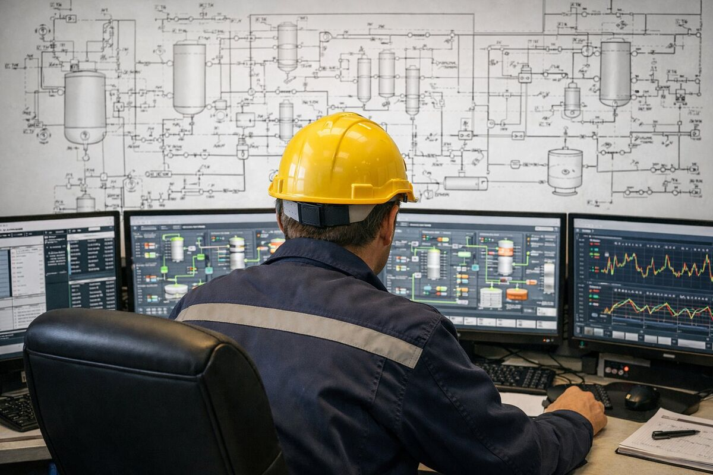

Numeri dell'impianto chiari e verificabili, prima e dopo l'investimento. E gli stessi indicatori su tutti gli impianti del portafoglio.
Il problema del biogas spesso non è tecnologico. È di gestione. Il margine si perde nel modo in cui si comprano le biomasse e si organizza il lavoro.
Siamo un operatore tecnologico indipendente: non possediamo impianti e non vendiamo tecnologia. Lavoriamo solo sul risultato dell'impianto.
Misuriamo l'impianto sul costo per metro cubo di metano. Da lì si capisce quale ricetta conviene, quali contratti rivedere e dove l'impianto perde margine. Carichi, arrivi e produzione si registrano sul momento, non a fine mese.

Per chi ha più impianti portiamo un metodo uguale ovunque: procedure scritte, responsabilità assegnate e dati confrontabili. L'asset manager governa con i numeri di ogni giorno; la piattaforma lavora per l'asset manager, non al suo posto.
Possiamo seguire un solo aspetto o l'intero impianto, sempre insieme alla proprietà, che resta al centro delle decisioni.
Sì. Lavoriamo con chi possiede, finanzia o sviluppa impianti di biogas e biometano: numeri dell'impianto chiari e verificabili, prima e dopo l'investimento.
Sul costo per metro cubo di metano prodotto. Da questo indicatore si capisce quale ricetta conviene, quali contratti rivedere e dove l'impianto perde margine.
Sì: le stesse procedure e gli stessi indicatori su tutti gli impianti del portafoglio, con un report giornaliero alla proprietà.
Sì. È un operatore tecnologico indipendente: non possiede impianti e non vende impianti né macchinari.
Partiamo dai numeri dell'impianto per capire quanto costa davvero il metano e dove si perde margine.
Analizziamo il tuo impianto